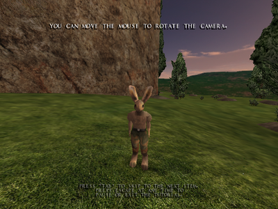
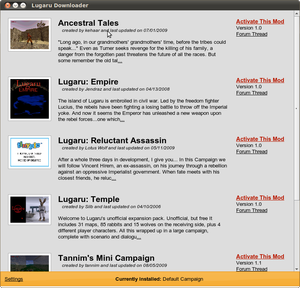

Lugaru HD
Archivierte Anleitung
Dieser Artikel wurde archiviert, da er - oder Teile daraus - nur noch unter einer älteren Ubuntu-Version nutzbar ist. Diese Anleitung wird vom Wiki-Team weder auf Richtigkeit überprüft noch anderweitig gepflegt. Zusätzlich wurde der Artikel für weitere Änderungen gesperrt.
Zum Verständnis dieses Artikels sind folgende Seiten hilfreich:
Anwendungen hinzufügen, optional
Programme zum Menü hinzufügen, optional
Verwendung von Adobe Air, optional
Archive entpacken, optional
Lugaru HD  (abgeleitet vom franz. Wort für Werwolf
(abgeleitet vom franz. Wort für Werwolf 
 ) ist ein Action-Adventure von Wolfire Games. Man schlüpft in die Rolle des Hasens Turner, welcher sich auf einem Rachefeldzug befindet, nachdem seine Familie von anderen Hasen ausgelöscht wurde und deckt hierbei eine Verschwörung auf. In diese sind der Kaninchenkönig Hickory und ein Rudel Wölfe verwickelt...
) ist ein Action-Adventure von Wolfire Games. Man schlüpft in die Rolle des Hasens Turner, welcher sich auf einem Rachefeldzug befindet, nachdem seine Familie von anderen Hasen ausgelöscht wurde und deckt hierbei eine Verschwörung auf. In diese sind der Kaninchenkönig Hickory und ein Rudel Wölfe verwickelt...
Gespielt wird mit Maus und Tastatur. Ein Tutorial führt den Spieler in die Steuerung ein. Das Spiel kann durch Mods erweitert werden.
Nach dem Erfolg des Humble Indie Bundles hat sich der Entwickler Wolfire Games dazu entschieden, den Quellcode des Spiels zu veröffentlichen.
|  |
| Tutorial |
Installation¶
Humble Indie Bundle¶
Den Installer aus der Aktion Humble Indie Bundle ausführbar machen [1] und installieren [2]:
./lugaru-full-linux-x86-1.0c.bin
Anschließend ist es unter "Anwendungen -> Spiele" zu finden.
|  |
| Lugaru-Downloader |
Mods¶
Lugaru-Downloader¶
Der Lugaro-Downloader bietet neben dem automatischen Herunterladen von Updates die Möglichkeit Sicherungen durchzuführen und Mods zu installieren.
Hinweis:
Um die Anwendung verwenden zu können muss Adobe AIR installiert sein. Außerdem sollten keine Mods aufgespielt worden sein.
Installation¶
Von der Internetseite  das Programm herunterladen und installieren [5]. Dieses wird anschließend gestartet. Nun den Ordner Data im Installationsverzeichnis anwählen. Über "Activate this Mod" wird die Modifikation eingespielt. "Revert to original Campaign" stellt den Ursprung wieder her. Weiterführende Informationen sind imWolfire Forum zu finden.
das Programm herunterladen und installieren [5]. Dieses wird anschließend gestartet. Nun den Ordner Data im Installationsverzeichnis anwählen. Über "Activate this Mod" wird die Modifikation eingespielt. "Revert to original Campaign" stellt den Ursprung wieder her. Weiterführende Informationen sind imWolfire Forum zu finden.
Manuell¶
Modifikationen, Level, Karten und Waffen sind auf folgenden Seiten, sowie unter weiterführenden Links, zu erhalten:
Hinweis:
Vor der Verwendung sollte im Vorfeld ein Backup des Ordners Data angefertigt werden.
Die gewünschte Modifikation herunterladen, entpacken [6] und die darin enthaltene README.TXT lesen. Die Dateien gemäß Vorgabe in die Ordner unter Data kopieren z.B. Maps für die Karten.
Problemlösungen¶
open /dev/[sound/]dsp - No such file or directory¶
Unter Lucid kann das Spiel nicht auf die Soundkarte zugreifen. Um das Programm verwenden zu können das folgende Paket installieren [3]
pulseaudio-utils
 mit apturl
mit apturl
Paketliste zum Kopieren:
sudo apt-get install pulseaudio-utils
sudo aptitude install pulseaudio-utils
und gemäß dieser Lösung mit einem vorangestellten padsp den Menüeintrag [4] erweitern.
Demo¶
Ein Demo kann von wolfire.com oder holarse heruntergeladen werden. Die Installation wie bei der Vollversion durchführen.
Deinstallation¶
Zur Deinstallation das Skript uninstall-lugaru.sh im Installationsverzeichnis ausführen [2].
Infobox¶
| Lugaru: The Rabbit's Foot | |
| Originaltitel: | Lugaru: The Rabbit's Foot |
| Genre: | Action-Adventure |
| Sprache: | |
| Veröffentlichung: | 2005 |
| Publisher: | Wolfire Games |
| Systemvoraussetzungen: | Intel Pentium 4 @ 1.5 GHz+ oder AMD Athlon XP 1500+ / 128 MB Grafikkarte / 40 MB Festplattenspeicher / OpenGL / Soundkarte |
| Medien: | Download |
| Läuft mit: | nativ |
- Erstellt mit Inyoka
-
 2004 – 2017 ubuntuusers.de • Einige Rechte vorbehalten
2004 – 2017 ubuntuusers.de • Einige Rechte vorbehalten
Lizenz • Kontakt • Datenschutz • Impressum • Serverstatus -
Serverhousing gespendet von